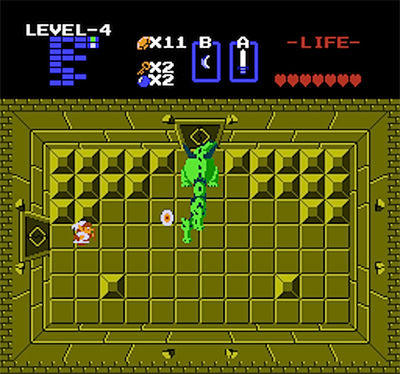
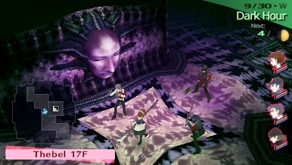
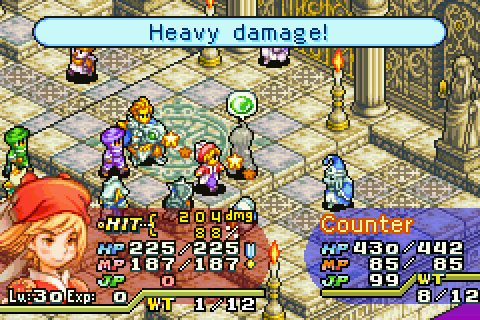
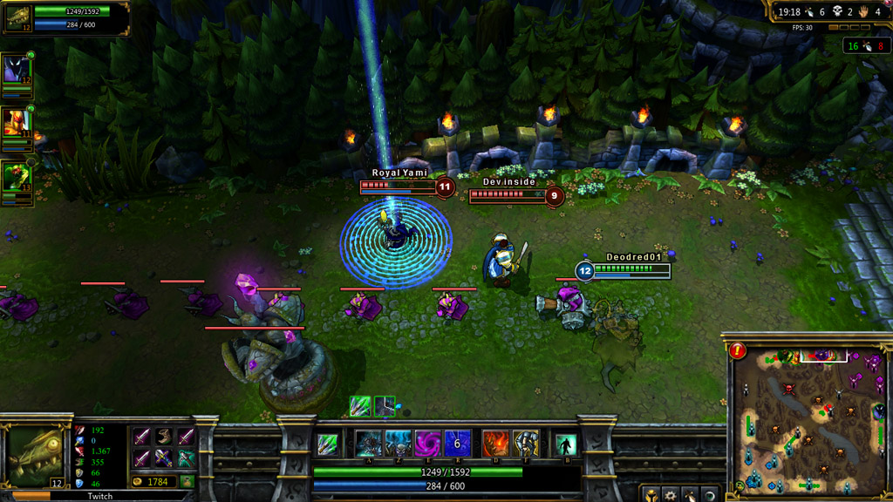
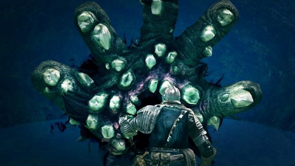
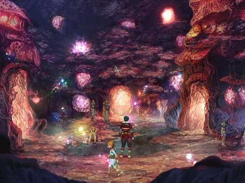

Les joies du game over
Il y a un déjà un petit moment, Bonhomme et moi discutions de son projet en cours, Blade of Victory, et plus particulièrement de la posture à adopter quant au game over. Je n'y avais pas trop réfléchi plus que ça auparavant et au bout d'un moment, je me suis rendu compte que c'était un sujet beaucoup plus difficile que ce à quoi je m'attendais. J'ai eu le temps d'oublier et puis récemment, j'ai dû réaliser un écran de game over pour un autre projet et je me suis dit que c'était un peu bête de ne pas coucher toute cette réflexion sur le papier. Aujourd'hui, je m'intéresse donc au game over.

Cet article est l'occasion d'un premier essai sur Level Up : à la suite d'une discussion sur le forum, j'ai essayé de rédiger une synthèse de ce qui a pu se dire et d'aboutir à un article plus riche que si je m'étais lancé seul dedans. En espérant qu'il y en ait beaucoup d'autres, je vous invite à nous faire part de vos critiques, commentaires et réflexions et surtout, à aller sur Level Up ! :D
I. Game over et difficulté.
1. Crime et châtiment.
Classiquement, le game over sanctionne (dans tous les sens du terme) la façon dont un joueur joue. La façon de choisir le type de game over adapté à un gameplay va beaucoup dépendre de la façon dont on souhaite « punir » le joueur et de la difficulté qu'on cherche à lui proposer. On trouve ainsi toute une gamme de game over, du plus cruel au plus clément.
Le game over classique — sans doute le plus pénalisant — consiste à effacer intégralement la progression du joueur, ce qui l'oblige à recommencer depuis le dernier point de sauvegarde, voire depuis le début du jeu. Son caractère punitif dépend beaucoup de la répartition et de la fréquence d'apparition des points de sauvegarde. Le joueur peut aussi être pénalisé par une perte plus partielle : de l'argent, des objets, de l'expérience, etc. Dans Dragon Quest ou Pokémon, le game over se solde par la perte d'une bonne partie de son argent (la moitié me semble-t-il) mais permet au joueur de conserver tout le reste. Ce type de game over ne rompt pas la continuité de l'histoire : le joueur continue de jouer après la rouste qu'il s'est prise et non pas comme si elle n'avait jamais existé. Le game over peut aussi consister à renvoyer le joueur à son point de départ. Quand on meurt dans un Zelda, on ne perd rien, mais on réapparaît (avec peu de vie) soit dans un lieu prédéterminé (l'entrée de la grotte dans le premier opus, la maison de l'oncle dans A Link to the Past), soit à l'entrée du donjon. Ce n'est pas forcément très pénalisant, mais suffisamment pour que le joueur soit stressé à l'idée de perdre. A l'autre bout du spectre, des jeux comme Final Fantasy XIII et Kingdom Hearts proposent au joueur de recommencer juste avant le combat, ce qui permet de ne pas interrompre le rythme du jeu.

La pénalité peut n'apparaître qu'avec la répétition, comme si le joueur avait un « droit à l'erreur ». C'est le principe des continues dans d'anciens jeux comme Starwing, mais c'est aussi ce qu'on retrouve dans la mécanique des combats de Prince of Persia : les Sables du Temps : tant que le joueur a du sable, c'est-à-dire qu'il n'a pas encore trop mal joué, il peut remonter le temps pour se sauver de la mort.
2. Un équilibre délicat.
Le game over, comme tout mécanisme permettant de régler la difficulté du jeu, repose sur un équilibre délicat entre frustration et tension.
Si le game over est trop fréquent et trop pénalisant, le joueur risque d'en avoir assez et d'arrêter de jouer. La différence entre The legend of Zelda premier du nom et beaucoup de jeux mal conçus de la même époque, c'est le choix d'un game over non pénalisant : le jeu est dur, c'est un véritable challenge, mais il encourage le joueur à persévérer grâce à un système intelligent de game over. Le joueur perd souvent, mais ne repart pas systématiquement de zéro. Si le game over avait été pénalisant comme dans un Final Fantasy classique, la plupart des joueurs auraient sans doute très rapidement arrêter de jouer.
A l'inverse, un game over trop « laxiste » ne permet pas joueur de ressentir une véritable tension, de s'impliquer dans le jeu. Pour citer un grand dramaturge français :
A vaincre sans péril, on triomphe sans gloire.
Persona 3 joue avec la répartition des checkpoints pour sadiser le joueur. L'unique donjon que vous parcourez pendant tout le jeu, le Tartarus, fonctionne par étages et vous propose régulièrement des téléporteurs vers l'entrée, à sens unique, mais très rarement de vrais téléporteurs. Pour ainsi dire, le jeu ne vous propose quasiment jamais de « vrais » checkpoints et donne au joueur le sentiment d'être en « apnée » dans le donjon. Le risque de game over est bien présent — d'autant plus que celui-ci est impitoyable, à savoir retour à la dernière sauvegarde sans sommation — ce qui permet de créer une vraie tension dans les donjons : quand on retourne enfin au point de sauvegarde, il y a un sentiment réel de soulagement, de récompense, de gratification.

Il y a ici un compromis délicat à trouver entre donner au joueur envie de continuer à jouer malgré le game over et lui donner la sensation qu'il prend des risques.
Un exemple subtil est celui que propose Drakengard 2 : si vous perdez une bataille, deux alternatives s'offrent à vous. Si vous abandonnez, vous retournez à l'écran-titre et votre progression, votre argent, votre expérience sont définitivement perdus. Si vous recommencez immédiatement la bataille, vous ne perdez que l'argent gagné mais par l'expérience. Ce principe est très fin. Il pousse le joueur à recommencer immédiatement plutôt que d'abandonner, mais sans lui faire grâce du game over. Le jouer est puni, mais on lui donne une chance de se « racheter », ou pour le voir sur un mode plus ludique, de se « refaire ». Le joueur n'est au final pas vraiment pénalisé s'il fait preuve de persévérance. Qui plus est, ce système permet d'éviter que le joueur ne se retrouve définitivement bloqué, car il a toujours la possibilité de faire de l'XP jusqu'à réussir à passer la prochaine bataille. Impossible donc de se retrouver dans une impasse ou de voir sa sauvegarde foutue.
II. Rupture et continuité.
Cette approche classique du game over sous l'angle de la pénalité n'est pourtant pas suffisante. Après avoir réfléchi un bon moment sur la notion de game over, je me suis rendu compte que je ne pourrai parler de celui-ci sans évoquer sa contrepartie, la sauvegarde. Pourquoi ? Parce que game over et sauvegarde sont deux mécanismes de jeux complémentaires qui permettent au game designer de contrôler le rythme, le flot du jeu, que ce soit en termes de gameplay ou de narration. Ce sont un peu les fonctions stop et play du jeu.
1. Les fonctions de la sauvegarde.
La sauvegarde a essentiellement deux fonctions dans un jeu.
D'une part, elle permet au joueur de conserver ses données, tout simplement. Si jamais un incident fâcheux se produit — coupure de courant, bug — la sauvegarde lui permet de récupérer ce qu'il a accompli. C'est cet aspect qui est le plus flagrant dans les systèmes de mots de passe. Ce dernier n'est plus trop à l'ordre du jour parce qu'on dispose maintenant de la mémoire nécessaire pour créer des fichiers de sauvegarde, mais aussi parce que ce système crée moins de liens entre un joueur et sa partie : une sauvegarde n'y est pas un objet unique, personnel.
D'autre part, la sauvegarde permet de faire une pause. Le joueur peut éteindre la console sereinement : c'est le caractéristique « À table ! » suivi de « Attends deux secondes, je sauvegarde ». Dans cette optique, on trouve les classiques fichiers de sauvegarde, mais aussi plus rarement des sauvegardes dites rapides ou temporaires : le joueur est renvoyé à l'écran-titre et sa sauvegarde disparaît dès qu'elle est chargée. Cette fonctionnalité est liée au rythme du jeu et on l'utilise surtout dans le cas où les séquences de jeux sont longues, comme dans un Tactical RPG à la Final Fantasy Tactics Advance. Ceci permet au joueur de mieux contrôler le rythme du jeu et de ne pas être obligé de jouer par tranche d'une heure minimum, ce qui par exemple incompatible avec des jeux qui visent les plus jeunes ou prévus pour des parties courtes (en particulier sur les consoles portables).

Au delà de ces deux fonctions, la sauvegarde doit respecter une condition essentielle : en sauvegardant, le joueur ne doit pas pouvoir foutre en l'air sa partie. Dit comme ça, ça a l'air tout bête, mais même des jeux pro récents s'y trompent (je vous renvoie au passage sur les checkpoints hors de propos dans cet article d'Ernest Adams). Final Fantasy Tactics premier du nom aurait pu être un chef-d'oeuvre. Mais la structure de la sauvegarde lui confère une difficulté incongrue : si vous sauvegardez au cours d'une série de missions, comme le jeu vous incite lourdement à le faire, vous risquez de vous retrouvez en train de recharger juste avant un combat trop dur pour vous (grâce à une courbe de difficulté complètement discontinue), sans aucune possibilité de faire du level grinding. Vous imaginez, une partie de 30 heures bonne pour la poubelle ?
2. Respecter le rythme du jeu.
Le game over et la sauvegarde, en tant que modes d'interruptions du jeu, permettent de contrôler son rythme.
Considérons ici des jeux au game over peu pénalisant, Final Fantasy XIII et Kingdom Hearts. Dans les deux cas, il s'agit de jeux qui se veulent rapides, nerveux, rythmées : les combats sont dynamiques, essentiellement basés sur la vitesse, la structure de la narration est linéaire (une pure ligne droite pour le premier, des mondes très linéaires pour le second). Dans cette optique, les développeurs ont choisi de proposer au joueur de recommencer immédiatement le combat perdu. Cette décision permet d'inciter le joueur à continuer de jouer et surtout, ne brise pas le rythme tendu du jeu. Final Fantasy XIII a été pensé comme une course-poursuite par ses développeurs — que l'on trouve ça réussi ou non — et le choix d'un game over qui n'interrompt pas le rythme du récit est cohérent avec cette vision du jeu. Exemple plus extrême encore, Super Meat Boy. Le gameplay de ce jeu repose essentiellement sur la possibilité de réessayer très rapidement après un échec. Imaginez ce qui se passerait s'il y avait une latence de, disons dix secondes entre chaque essai : Super Meat Boy passerait du statut de jeu culte à celui de médiocre plateformer.
A l'inverse, considérons maintenant l'exemple de Persona 3 et Persona 4. Ces jeux sont basés sur un rythme quotidien, avec un système de calendrier où le joueur construit pas à pas, étape par étape, degré par degré ses relations avec les différents personnages. Ce rythme progressif se retrouve dans des donjons dans lesquels on avance peu à peu, étage par étage : le choix d'un game over pénalisant — à savoir le retour à l'écran-titre — est fait de telle sorte qu'on hésite à avancer dans le donjon, on craint de perdre le butin accumulé à tout instant et donc, on avance à pas comptés parce que tenter de traverser dix étages d'un coup pour atteindre le prochain vrai checkpoint peut s'arriver très risqué. Le système de game over permet ici d'assurer un rythme de jeu cohérent avec la volonté des développeurs. Dans League of Legends et autres MOBA (et même plus généralement dans beaucoup de jeux multijoueurs), l'attente après la mort de son avatar n'est pas une simple pénalité, mais un élément stratégique à part entière puisqu'elle va influencer sur le rythme de la bataille et son issue, souvent de manière décisive.
Que le rythme du jeu soit lent, rapide, saccadé ou continu, le game over (et donc en creux, la sauvegarde) permet de contrôler ce rythme, de l'interrompre ou de le fluidifier. Quand vous réfléchissez au type de game over que vous allez choisir ou la façon dont vous allez placer vos checkpoints, il faut toujours vous demander ce que le joueur devra subir après le game over et si ceci correspond au rythme que vous cherchez à définir pour le jeu. Surtout, n'oubliez pas que l'attente, si elle est injustifiée, peut être extrêmement pénible pour le joueur : quelle punition plus grande pour un joueur que le non-jeu ? Non seulement vous avez perdu, votre honneur est sali, vous êtes pénalisé dans le jeu, mais en plus vous devez poireauter (et allez que je me farcis de nouveau les noms des développeurs, éditeurs, technologies utilisées, l'écran-titre et tous les menus, sans compter les temps de chargement en bonus).

Le placement des opportunités de sauvegarde est à ce titre essentiel. Un joueur qui a traversé toute une partie d'un niveau difficile et se voit obligé de tout recommencer pour une minuscule erreur peut tout à fait décider d'abandonner purement et simplement. C'est ce qui arrive par exemple quand le joueur, pour aller retenter la séquence difficile qui le bloque, doit retraverser à chaque fois tout le niveau (qu'il commence à connaître par cœur) parce que le level designer n'a pas prévu assez de points de sauvegarde. On peut essayer de résoudre ce problème en multipliant les checkpoints, comme dans un Alan Wake : la démultiplication des points de sauvegarde permet de compenser la difficulté de chaque « segment » de jeu et on peut recommencer directement la séquence qui nous bloque (et qui donc, nous intéresse :P). Mais sur ce sujet, le grand Miyamoto s'exprime sans doute bien mieux que moi.
III. La question de la narration.
Le game over, en tant que fin de la partie, peut aussi constituer la fin de l'histoire. C'est un élément narratif à part entière et la question de l'immersion du joueur doit être prise en compte.
Le premier danger pour la narration, c'est la répétition : devoir se manger deux fois — voire plus — les mêmes scènes, les mêmes passages après un game over est particulièrement pénible (et une option permettant de passer dialogues ou cut-scenes est souvent la bienvenue). Pire, ceci peut tuer l'émotion ou l'intensité de scènes pourtant bien construites et qui avaient marqué la première fois.
Un autre problème est celui du choix, question chère aux amateurs de RPG. Il est confortable de pouvoir sauvegarder à volonté, mais ceci peut ruiner la profondeur d'un jeu. Dans les RPG de Bioware comme Dragon Age : Origins ou Mass Effect, la possibilité de pouvoir sauvegarder à tout moment entre en contradiction avec le gameplay dans la mesure où elle retire le poids, l'importance véritable des choix effectués par le joueur : même s'il regrette une décision, le joueur a toujours l'opportunité de revenir en arrière. Les choix — déjà peu intéressants et tristement manichéens — sont alors vidés de toute leur substance : leur irréversibilité.
Mais le game over et la sauvegarde ne sont pas seulement des risques pour la narration : ce sont aussi des opportunités de l'enrichir et d'entrelacer plus subtilement le récit et le gameplay.

Dans Dark Souls et son prédécesseur Demon's Souls, le game over est intégré à la narration et au scénario mêmes. Lorsque le joueur meurt, il revient à son lieu de départ, mais après sa mort : tout ce qu'il a fait reste valable. S'il a pu récupérer l'arme surpuissante caché dans un coffre juste derrière le boss, tant mieux pour lui car il la conserve et pourra se servir de ladite arme pour asmater ledit boss. A l'inverse, s'il a gâché son mégalixir, il l'a dans le baba. En intégrant cet aspect au scénario (avec notamment l'apparition d'une sorte de « hub » pour morts, le Nexus), les développeurs ont su créer un système très intéressant et qui contribue tout particulièrement à l'ambiance extrêmement oppressante du titre.
Certains jeux jouent sur l'opposition diégétique/extradiégétique (ce que voit le personnage/ce que voit le joueur) avec de faux game over. Il s'agit souvent de séquences humoristiques comme le délirant « Fission Mailed » de Metal Gear Solid 2 et la fausse mort (avec déroulé complet du générique de fin !) du malheureux Guybrush Threepwood dans The Curse of Monkey Island. Les points de sauvegarde sont parfois intégrés à l'histoire du jeu (Masato Kato s'en est fait une spécialité avec des jeux comme Chrono Cross et Xenogears, mais nous n'en dirons pas plus :3). Pour pousser le bouchon encore plus loin, on pourrait parler de l'intrigant Baroque (ou du moins de sa version Saturn, si je ne fais pas d'erreur) : la sauvegarde, possible uniquement à la fin de chaque niveau de la tour qui constitue l'essentiel du jeu, peut échouer aléatoirement. Imaginez l'angoisse du joueur qui vient de voir la possibilité de sauvegarder lui être refusée, après une traversée déjà éprouvante.
La sauvegarde, au même titre que le game over, n'est donc juste un « système » pour conserver les données, elle est aussi un élément de narration à part entière et on peut l'utiliser comme telle : les sauvegardes de Resident Evil sont pour ainsi dire des objets (les fameux rouleaux encreurs) et leur utilisation fait tout l'intérêt narratif et l'ambiance des safe rooms. Le sentiment de soulagement, de respiration (pour reprendre la métaphore précédente :P) dans ces lieux est un grand moment de jeu vidéo : le gameplay y fait la narration et réussit à créer une émotion profonde chez le joueur.
Conclusion
Le game over et la sauvegarde sont deux systèmes étroitement liés, qui fonctionnent à la fois comme éléments de gameplay et de narration. Ce sont deux éléments symétriques qui permettent de régler la difficulté d'un jeu, mais surtout son rythme. Mais indépendamment de ces considérations théoriques, n'oublions pas que leur implémentation n'est pas anodine.
Tout d'abord, elle induit des contraintes techniques et un travail de programmation. Quand on travaille sur un jeu amateur ou indépendant, avec des contraintes de temps ou d'argent très strictes, ceci n'est pas à écarter. En termes de programmation, on peut dire que les solutions de sauvegarde les plus simples sont justement celles proposées par Final Fantasy ou Zelda, c'est-à-dire sauvegarder l'état du jeu à un moment précis et y revenir bêtement (Final Fantasy), ou ne pas toucher à cet état et réinsérer le joueur dedans en le déplaçant légèrement s'il déclenche une condition de défaite (Zelda).
Par ailleurs, elle participe de l'intégration de la fin de partie dans le game design. Un système comme celui de Dark Souls ou celui de World of Warcraft, où la mort constitue une partie du jeu, demande un gros travail supplémentaire sur le game design, et donc un gros travail technique. Décider ce que l'on sauvegarde et ce que l'on retire au joueur devient encore plus complexe. Le choix d'un système de game over, en tant qu'élément de gameplay, doit être réfléchi en fonction des autres éléments de gameplay et non comme une feature gratuite.

Enfin, tout bêtement, son habillage, graphique et sonore, doit s'intégrer dans le reste du jeu : ayons une pensée pour la délicate Soul Poetry de Baten Kaitos ou la mélancolique A Light Already Lost de Chrono Cross.
Ajouter un commentaire
Commentaires

Whouaw, je ne pensais pas qu'on pouvait dire autant de choses sur les sauvegardes et les Game Over !
Sinon, pour le premier commentaire, " on aurait pu parler de Zombi U ", je pense qu'il ne l'a pas fait car le jeu n'était pas encore sortie. :p. N'empêche si ce que tu dis est vrai faudra que je regarde de plus près ce jeu… Même si il ne sera QUE sur Wii U… :(
On pourrait aussi parler maintenant du game over de Zombie U qui est assez intéressant à analyser.
En effet, le joueur contrôle un survivant au début de la partie et doit avancer dans des niveaux, mais si il meurt, l'avatar devient alors un zombie et le joueur s'incarne alors dans un autre survivant qui commence à un endroit différent du lieu. La progression de l'ancien avatar est sauvegardé avec des portes déjà ouvertes et des raccourcis créés lors de la précédente partie et le joueur doit se rendre à l'endroit où il est mort pour récupérer ses affaires. Le plus frappant c'est qu'à ce moment là, on se retrouve face à face avec le zombie de notre ancien avatar.
Franchement, un exemple de gameplay autour du game over assez unique en son genre.
Enfin un bon gros article de game design comme on aime sur les forges, ça fzait un bail, Merlanfrit c'est cool mais à force…
"C'est toujours un plaisir (enrichissant) de lire ces articles." J'approuve
Très bon article ! Ça me fais penser que les checkpoints parfois indiquent implicitement l'arrivée d'un boss ou un gros événement, et du coup cela peut casser l'effet de surprise !
C'est toujours un plaisir (enrichissant) de lire ces articles.

Hey, il me semblait bien que j'avais participé à ce débat, je m'en suis rappelé qu'à la fin ^^
Un gros boulot de synthèse, comme d'habitude rempli d'exemples pertinents. Je critiquerais bien ta tendance à ne pas assez théoriser, mais c'est aussi une des forces de tes articles, qui doivent ainsi aider beaucoup de monde.
Il faudra lancer un autre sujet sur level-up !

Super article ! J'avais également bien aimé le texte à propos du game design de Dark Souls. Très bon blog, bien écrit et documenté. Continuez comme ça !